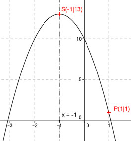

Aufgabe 100 Eine Parabel geht durch den Punkt (1|1), ist um den Faktor -3 gestreckt, und ihre Symmetrieachse geht durch x = -1. Wo liegt ihr Scheitelpunkt? Allgemeine Scheitelpunktform einer quadratischen Funktion: y = a(x - xS)2 + yS Symmetrieachse durch x = - 1 bedeutet, der Scheitelpunkt hat die Koordinate xs = -1. Punkt (1|1) liefert x = 1 und y = 1. Um den Faktor -3 gestreckt, liefert a = -3. In die allgemeine Form eingesetzt: 1 = -3(1 - (-1))2 + c 1 = -3 * 4 + c 1 = -12 + c |+12 c = 13 Gesuchte Funktionsgleichung (Scheitelpunktform): y = -3(x + 1)² + 13 Scheitelpunkt abgelesen: S(-1|13) 